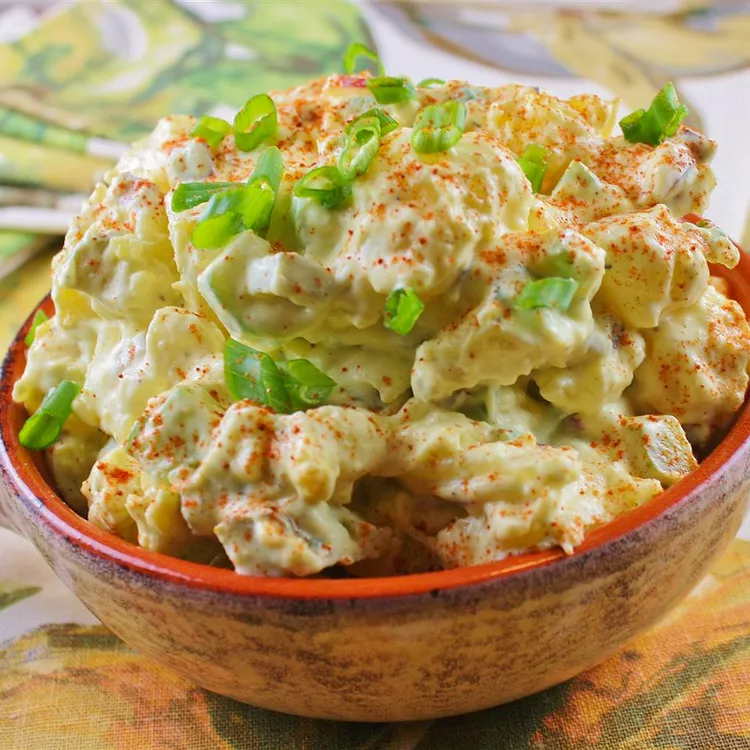

Potato Salad

Description
This easy potato salad recipe with old-fashioned flavor is quick to make. It will become a go-to summer side dish.
Best made the day before.
Ingredients
- 5 pounds red potatoes, chopped
- 3 cups mayonnaise
- 2 cups finely chopped pickles
- 5 large hard-cooked eggs, chopped
- 1/2 cup chopped red onion
- 1/2 cup chopped celery
- 3 tablespoons prepared mustard
- 1 tablespoon apple cider vinegar
- 1 teaspoon salt, or to taste
- 1/2 teaspoon ground black pepper
Steps
- Place potatoes into a large pot and cover with salted water; bring to a boil. Reduce heat to medium-low and
simmer until
tender, about 10 minutes. Drain. Return potatoes to the empty pot to dry and cool.
- Stir together mayonnaise, pickles, hard-cooked eggs, red onion, celery, mustard, cider vinegar, salt, and
pepper in a
large bowl. Fold in cooled potatoes until well combined.
- Chill potato salad in the refrigerator for at least 6 hours to overnight before serving.
Back